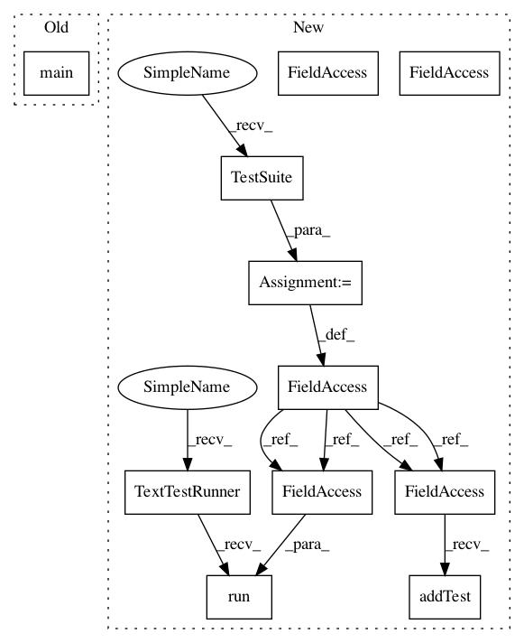

afa105071c5d3a7e934214863c3fedcfa30d0ba2,tests/model_test.py,,,#,180
Before Change
if __name__ == "__main__":
unittest.main()
//suite = unittest.TestSuite()
//suite.addTest(OnnxModelTest("test_conv2D_transpose_2"))
//unittest.TextTestRunner().run(suite)
After Change
if __name__ == "__main__":
//unittest.main()
suite = unittest.TestSuite()
suite.addTest(OnnxModelTest("test_lstm"))
unittest.TextTestRunner().run(suite)
In pattern: SUPERPATTERN
Frequency: 4
Non-data size: 11
Instances
Project Name: onnx/onnx-coreml
Commit Name: afa105071c5d3a7e934214863c3fedcfa30d0ba2
Time: 2018-11-06
Author: aseem.elec@gmail.com
File Name: tests/model_test.py
Class Name:
Method Name:
Project Name: apple/coremltools
Commit Name: 53f1068a5dfa4fc271107955c304b81b7ddf1380
Time: 2020-01-16
Author: yuduo@apple.com
File Name: coremltools/converters/tensorflow/test/test_convnets.py
Class Name:
Method Name:
Project Name: apple/coremltools
Commit Name: d0f4b1d4094b040aab4150145c0deda06239b7a9
Time: 2019-10-08
Author: shuoxin_lin@apple.com
File Name: coremltools/converters/tensorflow/test/test_tf_graphs.py
Class Name:
Method Name:
Project Name: onnx/onnx-coreml
Commit Name: afa105071c5d3a7e934214863c3fedcfa30d0ba2
Time: 2018-11-06
Author: aseem.elec@gmail.com
File Name: tests/model_test.py
Class Name:
Method Name:
Project Name: apple/coremltools
Commit Name: 34332fee1df6015a80505386c38f246cd39831e0
Time: 2019-11-20
Author: gdawer@apple.com
File Name: coremltools/converters/tensorflow/test/test_convnets.py
Class Name:
Method Name: